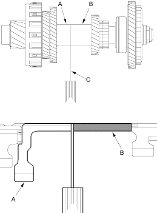

- Tighten the locknut (G) to 29 Nm (3.0 kgf/m, 22 lbf/ft). The locknut has left-hand threads.
- Measure the clearance between the 2nd gear (A) and 28 mm distance collar (B) with a feeler gauge (C) in at least 3 places. Use the average as the actual clearance.
STANDARD: 0.10-0.18 mm (0.004-0.007 in.)

- If the clearance is out of standard, disassemble the countershaft. Remove the 28 mm distance collar and measure its length.
- Select and install a new distance collar, assemble the countershaft, then recheck.
DISTANCE COLLAR, 28 mm
No. Part Number Thickness 1 90503-PC9-000 39.00 mm (1.535 in.) 2 90504-PC9-000 39.10 mm (1.539 in.) 3 90505-PC9-000 39.20 mm (1.543 in.) 4 90507-PC9-000 39.30 mm (1.547 in.) 5 90508-PC9-000 39.05 mm (1.537 in.) 6 90509-PC9-000 39.15 mm (1.541 in.) 7 90510-PC9-000 39.25 mm (1.545 in.) 8 90511-PC9-000 38.90 mm (1.531 in.) 9 90512-PC9-000 38.95 mm (1.533 in.) - After replacing the distance collar, make sure the clearance is within standard.
- Disassemble the shaft and gears.
- Reinstall the bearing in the transmission housing (see page 14-177).